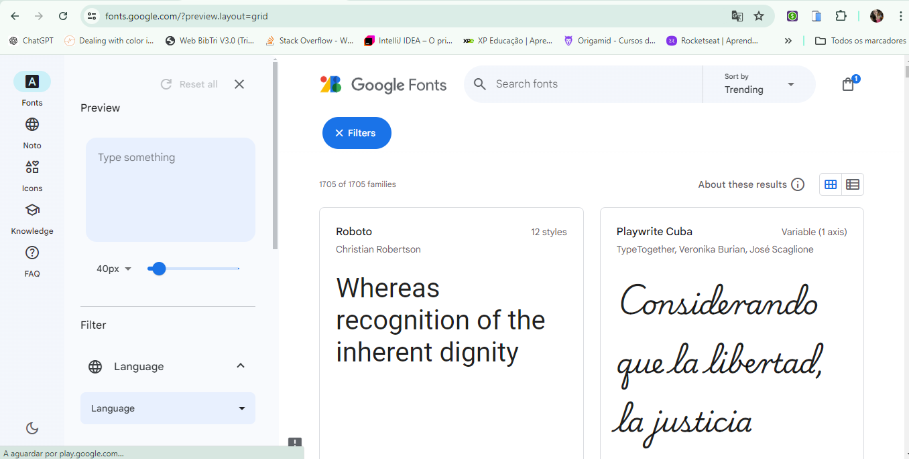
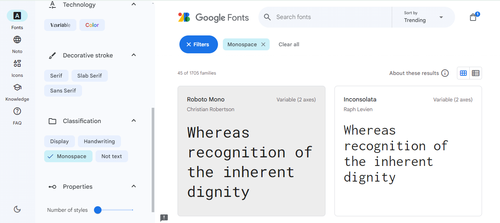
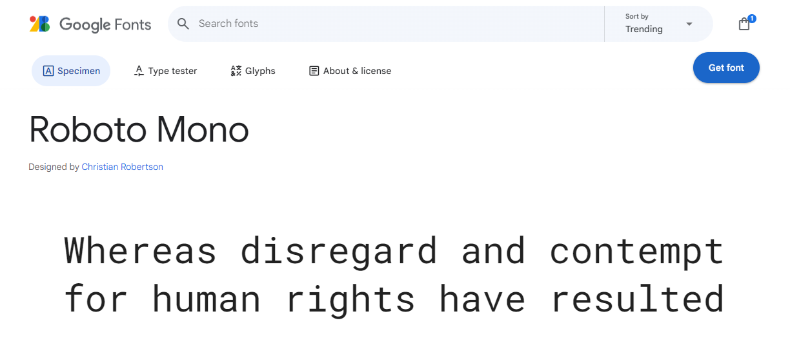
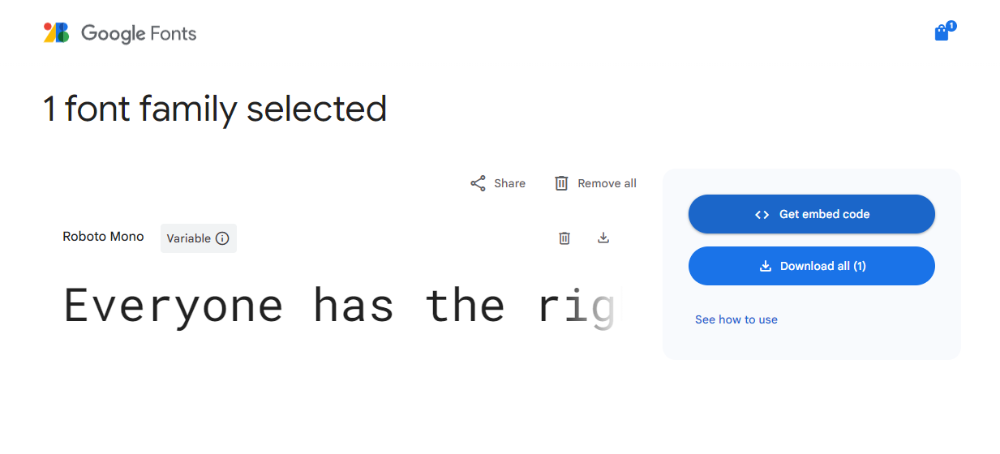
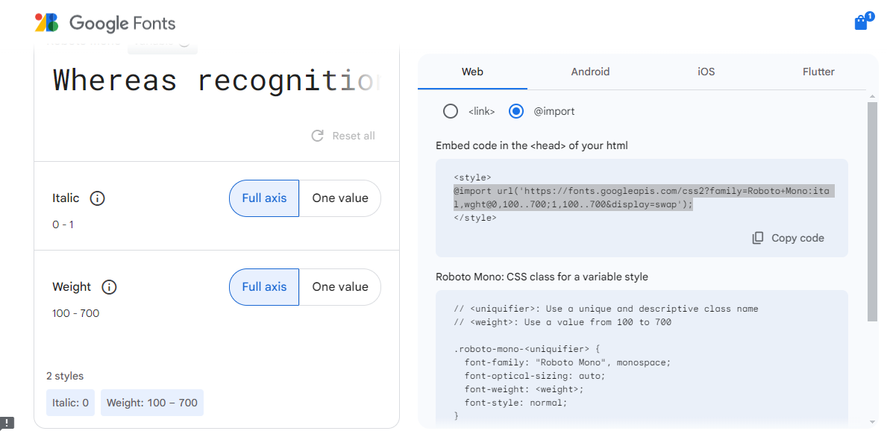
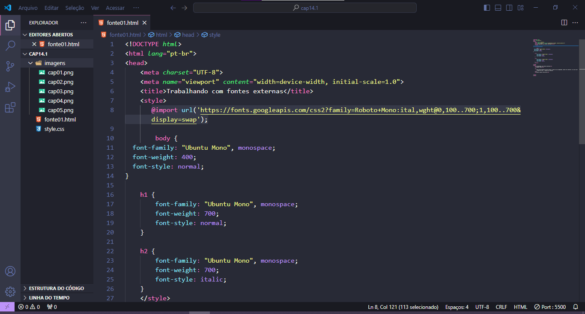
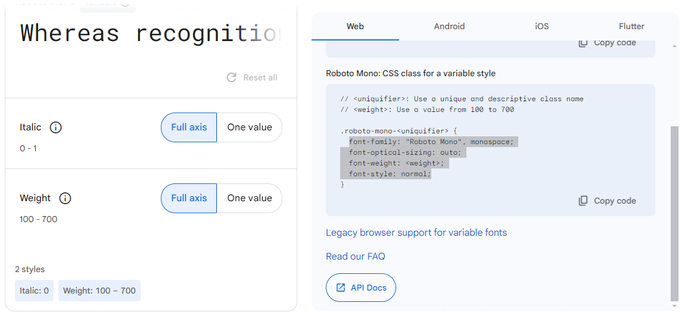
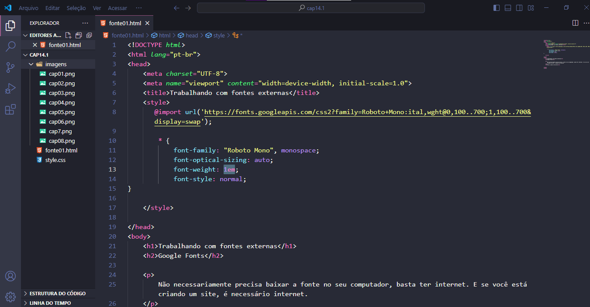
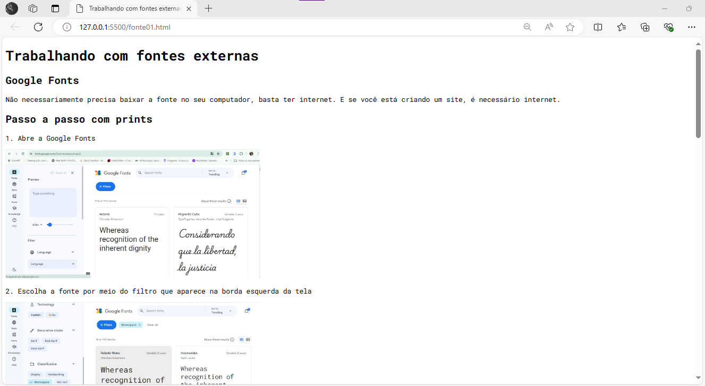

Não necessariamente precisa baixar a fonte no seu computador, basta ter internet. E se você está criando um site, é necessário internet.
1. Abre a Google Fonts
2. Escolha a fonte por meio do filtro que aparece na borda esquerda da tela
3. Selecione o 'get font'
4. Selecione "get embed code"
5. Selecione o @import para o CSS e copie o que está entre o style
6. Coloque o código dentro do style
7. Copie o código de baixo para cada parte que deseja inserir a fonte
8. Cole no código abrindo parenteses para as partes que deseja inserir dentro do style
9. TCHARAM!!!!! this is magic
